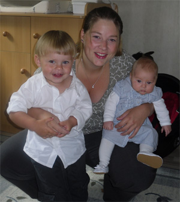

| GOAL Our goal is to breed social silvercats that follows the written standards for persians and exotics. Our expectation for the future is to breed tortie, blue, creme and red shaded silver and chinchillas to. The cats in our breedingprogram are PKD negativ. THE CATTERY Our cats are family members. Female cats with kittens have their own room and privacy. Our both studs live freely with all the others. The cats in the household eats almost all dry food from Royal canin, meat, and leftover food. Other kind of nutrition is Nutrical and Vitakraft Paste. Kittens are brought up on Royal Canin Baby Cat and Kitten, KMR, meat, a/d from Hill and leftover food. They also drink both homemade and bought gruel. To get social individuals the kittens are tought already from the beginning to be brushed, held and handled with. After delivery to the new owner/owners we want continuing update how the kitten/cat is doing and we're grateful to receive pictures of the kitten/cat to put here on the site and keep in an album. We try to visit several shows during each season to get comments of the cats, but also to acquire knowledge and meet other catpeople.
|
||||
|  ABOUT US We, Maria and Stefan, are living close to Gothenburg in Sweden. We have a mittlebig breeding of Persians and Exotics in the colours Shaded Silver and Chinchilla. We are also proud parents to Benjamin, Elin and Robin. We spend a lot of time with our cats and we want that every cat is happy and satisfied with it's life. We try to give a little time to each one of them and try to treat them as fair as possible. The most important thing for us is that our cats are well and healthy. HISTORY S* Bergudden's is a cattery that Maria started in the Spring 2001 at the same time as the first litter arrived. From the beginning there were no acctually plans with the breeding but as time went by, we chose to continue with Shaded Silver and Chinchilla. |
||||